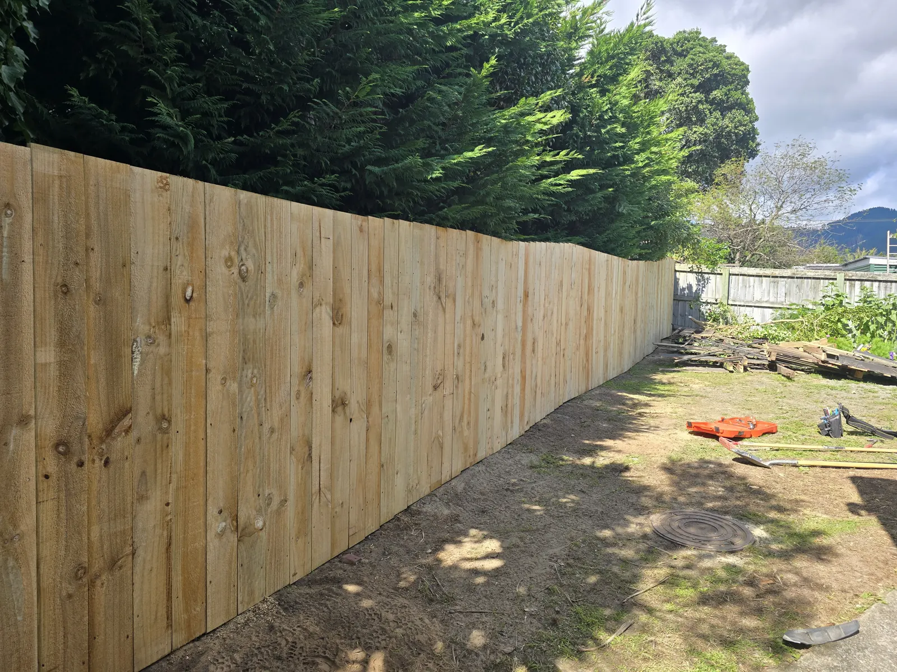
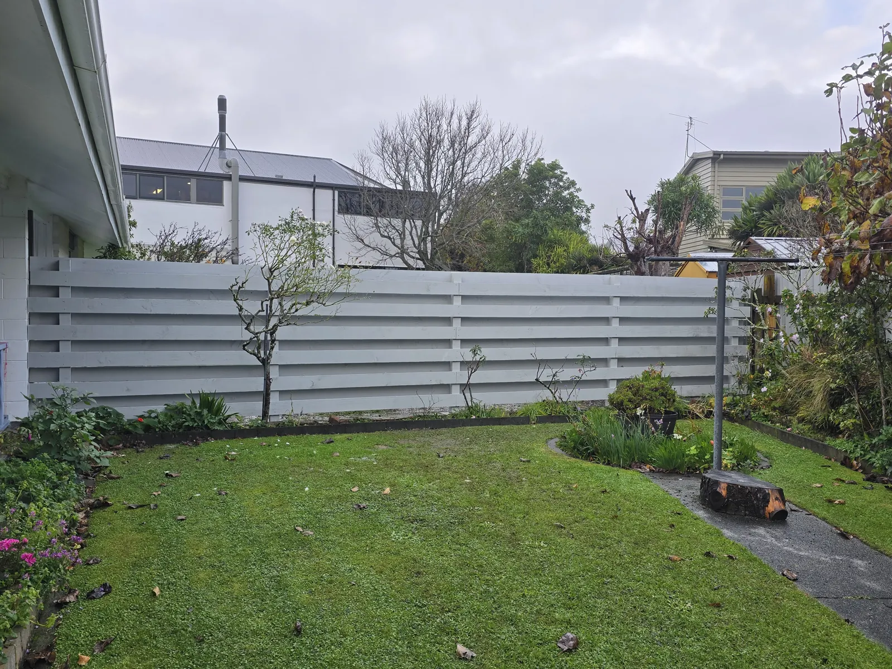
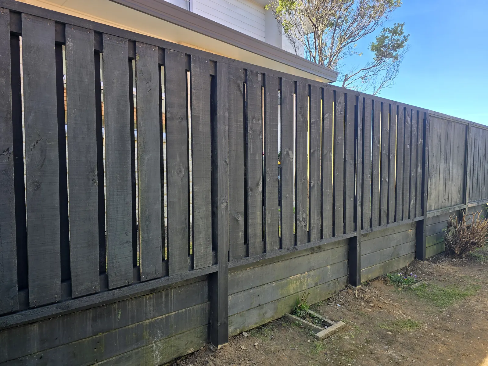
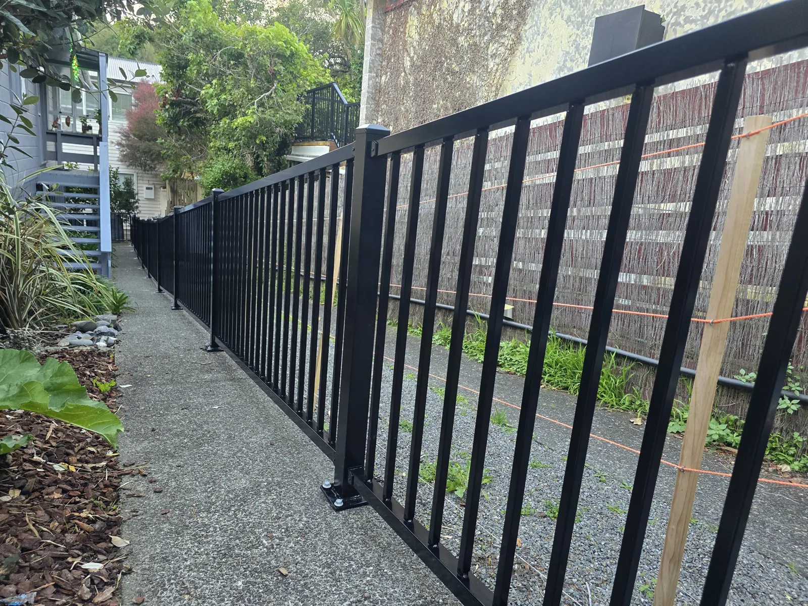
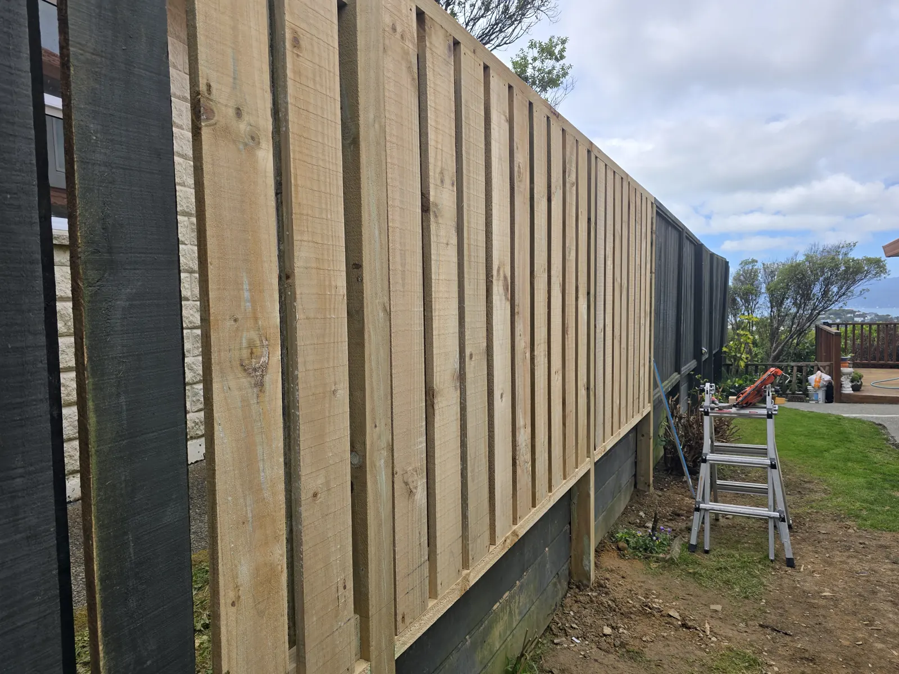
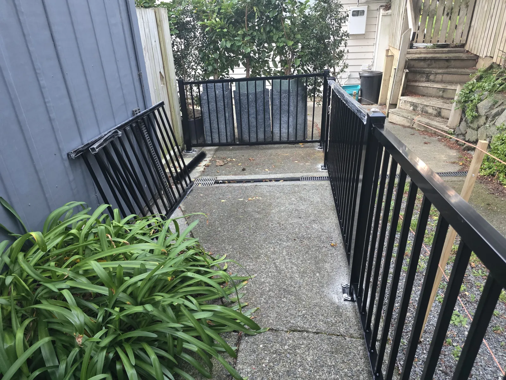
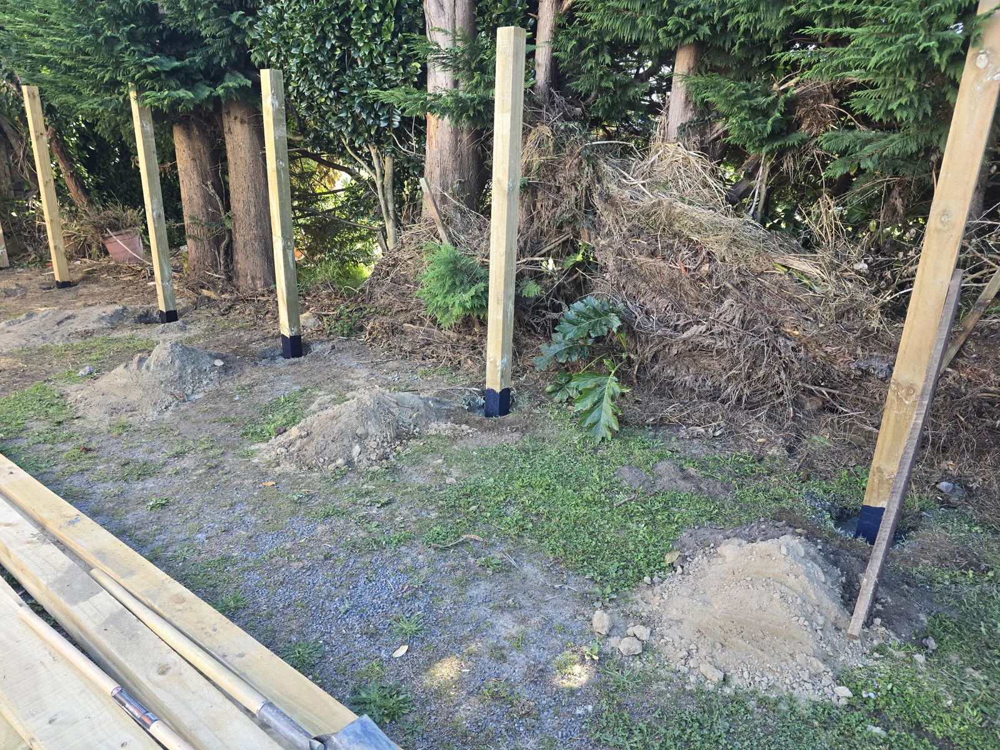
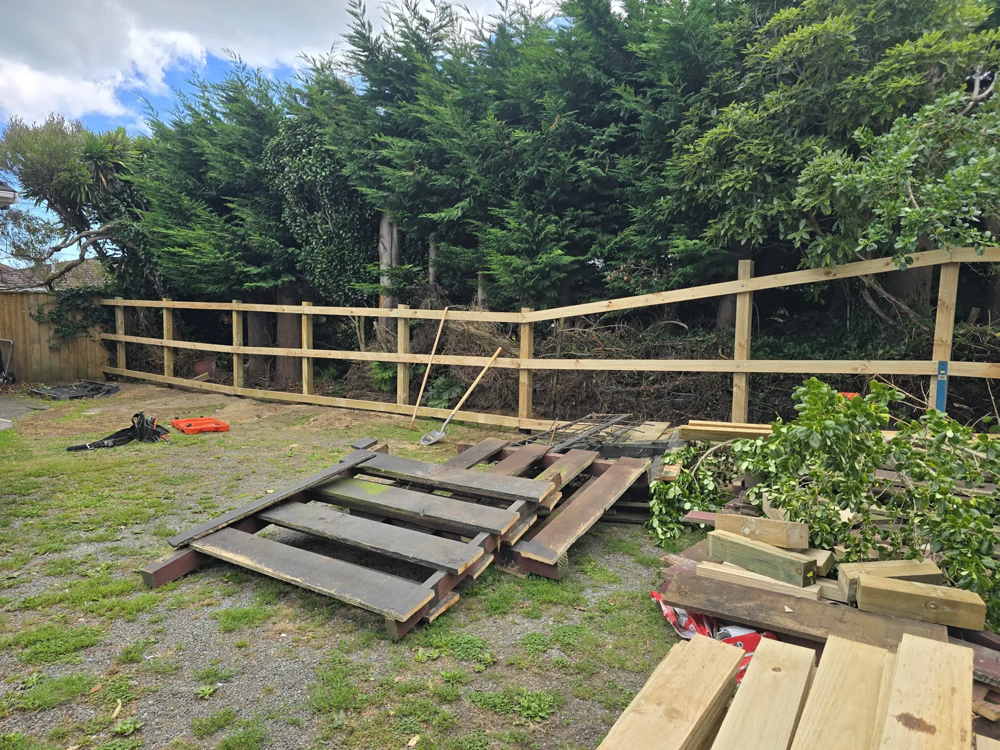
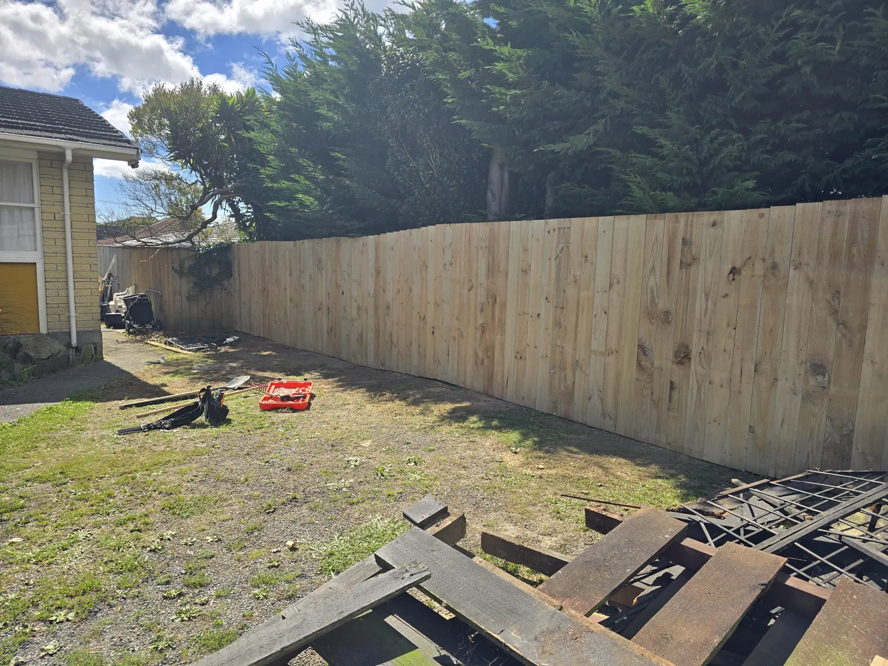

Most popularTimber Paling Fencing
Close-boarded palings on a solid post-and-rail frame. Strong, cost-effective and completely private — stain, paint or let it weather silver.
PrivacyLong boundariesBest value

Timber, aluminium and PVC fencing, gates and storm repairs from a local, fully insured team — with a clear written quote before a single post goes in.
Peace of mind on every job
Extras approved by you first
Zero pressure to commit
Serving Wellington since 2024
Wellington is hard on fences. Wind, rain and steep sections find every shortcut — here’s what we fix most often, and how.
Saturated ground and high winds take down tired fences — and sometimes the retaining wall under them.
Wrong-grade timber and shallow posts are why so many fences give up after a few winters.
Gappy, low or patched-up boundaries make your backyard feel like everyone else’s.
Steep, narrow and awkward access is standard in Wellington — and where cheap fences look messy.
We take the time to understand your budget, your boundary and how exposed it is, then recommend what will actually last there.

Most popularClose-boarded palings on a solid post-and-rail frame. Strong, cost-effective and completely private — stain, paint or let it weather silver.

Wind-smartBoards alternate either side of the rails so wind passes through the gaps instead of pushing the whole fence over. Privacy and light, with a contemporary look.

Low maintenanceRust-proof, strong and never needs painting. Slat, picket, pool and raking panels that angle to match the exact gradient of your section.
PVC and vinyl fencing in a range of styles that handles Wellington’s changeable climate without rotting, warping or needing a repaint.

Storm damageHigh winds, collapsed retaining walls, rotten posts. We secure the site, find the real cause and build it back better, not just patched.

Made to matchPedestrian and driveway gates built to match your new or existing fence — hung true so they swing and latch properly for years.
From our Kapiti Road build — straight posts, solid framing and tight, consistent palings from end to end.

Treated posts at regular intervals, concreted in for stability.

The structural backbone, built for coastal wind and moisture.

Checked for line as we go, so the top runs clean and straight.
A few recent jobs from Crofton Downs to Paraparaumu.
Don’t just take our word for it.
“…the trades person/owner of business was really easy to work with and good suggestions. Great work ethic and reasonably priced. I would highly recommend Ricky 👍”
A fence that leans in two winters costs you twice. Here’s the difference.
Simple, straightforward and no pressure at any point.
Answer a few quick questions in our form or give us a call on 04 888 9788.
We look at your boundary, recommend what suits it and give you an honest written quote.
Our team arrives on time and builds to a high standard, with any changes agreed with you first.
We clean up thoroughly and walk you through the finished job.
Straight answers — no sales talk.
Send us a few details and we’ll recommend the best option for your section and budget.
From the city’s hillside sections to the Kapiti Coast, we’re local — so we know the terrain and the weather your fence has to handle.
Answer a few quick questions and we’ll come back with an honest, site-specific recommendation and a clear written quote.